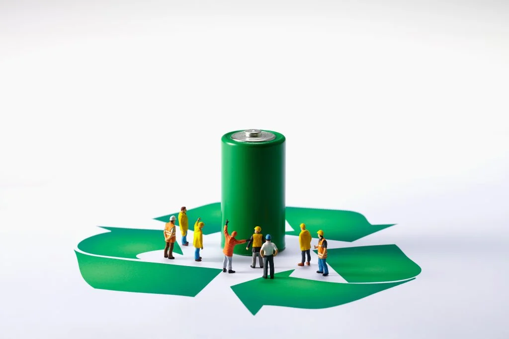
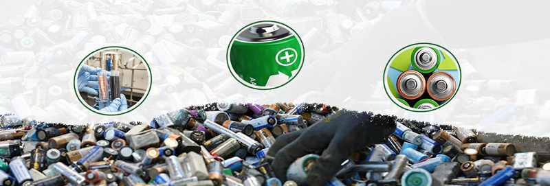

As India rapidly embraces electric vehicles (EVs) and renewable energy technologies, the demand for batteries is skyrocketing. However, this growth also brings a significant challenge: the increasing generation of battery waste.
In this blog post, we'll explore the current state of battery recycling in India, its environmental impact, and the steps being taken to create a more sustainable future.
The Rise of Battery Waste in India
India is currently generating around 72 GWh to 81 GWh of battery waste annually, which translates to approximately 447,000 to 517,000 tons of waste batteries reaching recycling firms from 2022 to 2030. This figure is expected to rise dramatically as the demand for EVs and consumer electronics continues to grow. By 2030, the annual generation of lithium-ion battery (LIB) waste alone is projected to reach 43,000 tons.
The Importance of Recycling
Recycling batteries is crucial for several reasons:
- Resource Recovery: Efficient recycling processes can recover over 98% of critical materials such as lithium, cobalt, nickel, and graphite from lithium-ion batteries, which are essential for manufacturing new batteries.
- Environmental Impact: Recycling batteries is estimated to lower their production cycles' carbon emissions by up to 90%. It also reduces the need for raw material extraction, preventing pollution and conserving natural resources.
- Sustainability Goals: Battery recycling aims to reduce reliance on imported raw materials, strengthen local supply chains, and minimize the environmental impact associated with battery production and disposal.

The Current State of Battery Recycling in India
India's battery recycling industry is still in its early stages, with a current recycling capacity of less than 2,000 tons per year. However, this capacity is expected to increase to 30,000 tons per year in the next two to three years as the industry develops.
The Battery Waste Management Rules, 2022, have been introduced to promote responsible battery recycling in India. These rules mandate that manufacturers ensure a minimum recovery of 90% of materials by 2027 and incorporate 5% recycled materials in new batteries by 2027, increasing to 20% by 2030-31.

The Future of Battery Recycling in India
The future of battery recycling in India looks promising, with significant growth potential driven by the rise of electric vehicles and supportive government policies. The lithium-ion battery market in India is projected to grow at a compound annual growth rate (CAGR) of 37.5%, reaching approximately 132 GWh by 2030. This growth is expected to generate significant amounts of battery waste, estimated at around 447,000 to 517,000 tons between 2022 and 2030.
To meet this demand, India's EV battery recycling market is projected to expand to 128 GWh by 2030, a substantial increase from just 2 GWh in 2023. Companies like Attero, India's largest lithium battery recycler, are leading the way with plans to expand their recycling capacity to an additional 20,000 tons per year.
Conclusion
As India continues to embrace clean energy technologies, the importance of battery recycling cannot be overstated. By investing in recycling infrastructure and promoting sustainable practices, India can reduce its environmental impact, recover valuable materials, and create a more circular economy. The challenges are significant, but with the right policies, investments, and public awareness, India can lead the way in creating a sustainable future for battery technology.